Von Alpinrunners
Wenn du etwas zu melden oder zu berichten hast, kannst du das gerne mittels dem Formular am Ende dieser Seite eingeben. Es wird dann baldmöglichst hier "von Alpinrunners" eingefügt.
Diese Seite lebt mit euren Infos, News, Tratsch und Klatsch aus der Alpinrunner- Familie
vielen Dank für deine Einträge
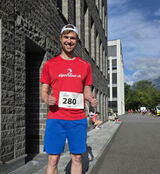
13. Juni 2026
Lars beim LGT - Marathon dabei
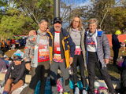
05. November 2023
vier Alpinrunner in New York vor dem Start
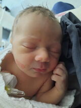
18. September 2023
Andrin unser neuer Erdenbürger ist der Stolz von Dani und Olivia
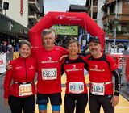
01. Juli 2023
Martin & Isabella Lüönd , Bea &Peter Altmann
zur Rangliste
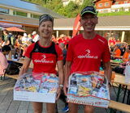
18. September 2021
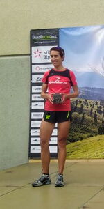
18. Juli 2021
Cornelia Kat. 2. Rang und Heinz Kat.1. Rang beim Engadin Ultratrail 2021

11. Dezember 2020
Valentina Romina Bolt erblickte die Welt mit den stolzen Eltern Dani und Davina
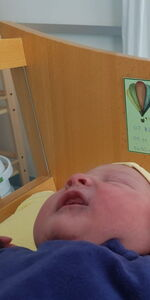
07. November 2020
begrüssen wir Lavinia Gisler, Tochter von Michi und Petra Gisler
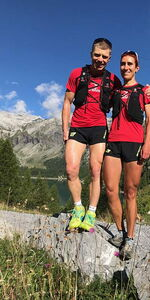
03. September 2020
Wir geniessen die Trails im Wallis in vollen Zügen.
Wir wünschen euch einen schönen Erlebnislauf.
Cornelia & Köbi
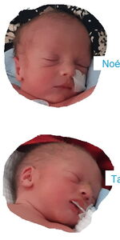
11. März 2020
Michel Zogg ist am 9. März 2020 Vater geworden! Zwillinge, zwei Buben - Noé und Tao, wir gratulieren herzlich zum doppelten Glück
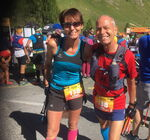
08. September 2019
in 8 Tagen von Oberstdorf D nach Sulden I mit 273 Km 16'000 hm. Joschi und Patrizia beweltigten die Strecke in der Kat. Senior Master Mixed den 11. Schlussrang. Fotos hier
28. Juli 2019
3 Alpinrunner waren beim Sky race bozen. Corinne Kagerer hat auf der 121 km, 7'500 HM, den hervorragenden 4 Platz erreicht. Bea wurde Zweite in der AK50+ beim 27km Lauf. Das Rennen wurde durch einen Todesfall überschattet; eine Läuferin wurde durch Blitzschlag getötet. Gruss Peter
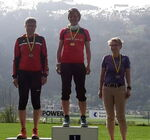
22.April 2019 von Petra Gredig
Ochsenweidelauf in Zizers mit Podestplatz , zur Rangliste
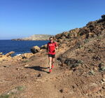
27. Feb. 2019 von Dani Ulrich
auf Menorca auf den Trails unterwegs bei perfektem Wetter, wenig Touristen und anspruchsvollen Trails lässt es Dani mit seinem Kollegen gut gehen > weitere Bilder hier
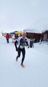
15.Januar 2019 von Heinz Joos
ein Erlebnisbericht vom Arosa Snowtrail 2019 als .pdf hier
"Herumgeirrt in Nebel"
2018
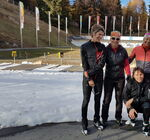
06. November von Petra Gredig
Langlauf meets Trailrunning - Geniales Kurzlager mit Jasmin und Guy Nugige, sehr empfehlenswert. Sehr interessant und abwechlungsreich.
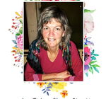
27. September 2018 von Willem De Vos
traurige Nachrichten aus Holland:
Anita Vlasveld ist überaschend verstorben. Anita war mit uns beim Transalpine run im 2009 mit Willem als Teampartner dabei. Auch bei verschiedenen Anlässe und Laufwochen war Anita mit dabei. Wir tragen Anita bei uns in Erinnerung
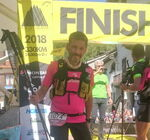
24. September 2018 von Ayhan Artan
Hurra :-) Nach mehreren Anläufen endlich den Tor des Geants in 146 Stunden gefnisht.
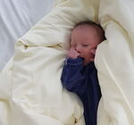
2. September 2018
Nachwuchs für Alpinrunner: Andrin ist am 2. September geboren, Michi und Petra Gisler sind die stolzen Eltern herzliche Gratulation
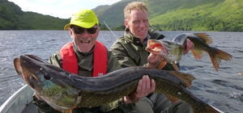
25. Juni 2018
zwei Alpinrunner auf Abwegen hier gehts zu ein paar Bilder
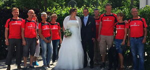
01. Juni 2018
Michi und Petra haben geheiratet, wir gratulieren recht herzlich
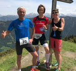
26. Mai 2018
Grüße vom Safier Berglauf, Heinz, Petra, Christina
2017
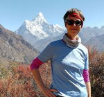
11. November 2017
Grüße vom Dach der Welt! Sabine aus Regensburg
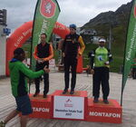
18.Juni 2017
Montafon Totale Ultratrail mit Dani Bold auf dem Stockerl
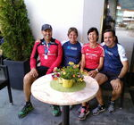
18.Juni 2017
Stilfserjoch Marathon mit Martin, Isabella, Bea, Peter
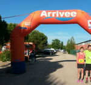
11.Juni 2017
Trails du Caminols (FR) Marilene und Jean-Marie
13. Mai. 2017
Bizau Traillauf Werni Ott versuchte den "alpinrunnner.ch" alle Ehre zu machen. Bizau Ultratrail 48,2 KM und 2990 HM.
2016
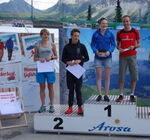
20. Sept. 2016
Arosa Trail Run Dani Bolt siegt im Trailrunning über die AT15 Distanz. Gerti Höllrigl wird im gleichen Rennen tolle 2. bei den Frauen. Auch Stefan Knupfer und Dani Ulrich zeigen tolle Rennen auf der grossen Strecke AT46 als 6. bzw. 7.
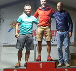
04. Sept. 2016
MonteRosa Ultratrail , Stefan und Werni auf dem Podest, mit Brigitte, Dani J., Sèverine, Fabian und Marianne waren weitere Alpinrunner dabei
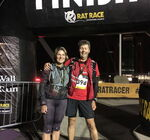
20. Juni 2016
Martin und Isabella Lüönd beim The Wall Ultra Run 110 Km in England. Dei Beiden haben es geschafft !!
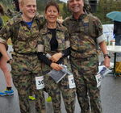
01. Mai 2016
Drei alpinrunner am Domleschger Waffenlauf
Dani, Maria und Röbi
22. April 2016 von Barbara Schuler
Wir haben es geschafft und die PdG 2016 ins Ziel gebracht
das war ein echtes Erlebnis :-) und wir hatten hammergeniales Glück mit dem Wetter! Also besser kann man es glaub nicht mehr erwischen .... Das Matterhorn im Mondschein und unter Sternenhimmel gerade noch erträglich kalt und fast kein Wind auf dem höchten Punkt Tete Blanche dann Richtung Arolla in den Tag rein Abfahren und beim nächsten Aufstieg die sonnenbeschienen Gipfel betrachten. kurze Alpine Einlage über den Col de Riedmatten und dann von der Rosablanche aus ein absolutes Gipfelpanorama. Vorallem weit in der Ferne wieder das Matterhorn sehen und realisieren, wie weit es alles ist ... und da oben zum ersten mal sicher sein, das man es geschafft hat !!!
Der letzte Anstieg über den Col de la Chaux geht dann grad noch von selbst ... auch wenn es nochmal eine Tragepassage war .... Der Zieleinlauf in Verbier ist dann nur noch Genuss pur! Es war zwar von Anfang an ein rechter Kampf um die Schlusszeiten der Kontrollposten zu erreichen, da ich falsch angemeldet hatte .... aber wir haben es geschafft!
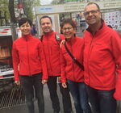
11. April 2016
Conrad's und Altmann's beim Wien Marathon
schönes Erlebnis in Wien Bea, Peter, Röbi und Maria
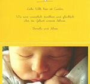
April 2016
Nachwuchs bei Alpinrunner- Freunden: Silvio Arpagaus und Daniela Wenger sind stolze Eltern von Curdin Manuel, herzliche Gratulation
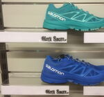
05. Februar 2016
Neue Trailrunningschuhe von Salomon bei Mark-Sport eingetroffen
der Salomon Strassenschuh
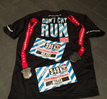
18. Januar 2016
Dr erschti Fisherman Strongmanrun Winteredition in Villar-sur-Ollon! Wir waren bei dem einmaligen und speziellen Erlebnis dabei. 12 Km 700 hm und knackige 36 Hindernisse im Tiefschnee waren zu bewältigen. Wir haben es gepackt. Superkalt und super amüsiert.
Sandra und Massimo
2015
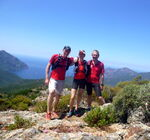
06. Dezember 2015
Herrliche Trails auf Korsika erkunden mit Brigitte, Thomas und Marco vom 15.- 22. Mai 2016. Herrliche Küstentouren und anspruchsvolle Bergpassagen erwartet die Teilnehmer der Laufwoche auf Korsika. Ein Lauferlebnis mit viel Abwechslung ist garantiert. Wer mitkommen möchte und einfach eine schöne Ferienwoche in der Gegend von Calvi verbringen möchte kann sich auch ohne Läuferpaket bei uns anmelden.
Hier findest du auch Fotos und sogar ein Film von unserer Erkundungswoche.
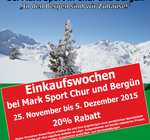
10.November 2015
Einkaufswoche bei Mark-Sport 20% Rabatt für alle Alpinrunner Freunde
16. Oktober 2015
Das Jahresprogramm 2016 der Alpinrunner zum Flyer pdf
Details auf der AGENDA zu finden
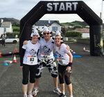
07. Oktober 2015
http://www.mooathon.com/ in Donegal - Irland
Marie lief mit ihren zwei Kollegen den hügeligen Halbmarathon entlang der Küste von Irland - Das alles als Kuh verkleidet. Nicht nur landschaftlich ein voller Erfolg!
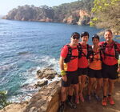
16. September 2015
Conrads und Altmanns bei einer Laufwoche Costa Brava
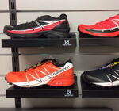
26. August 2015
Neue Trailrunningschuhe von Salomon bei Mark-Sport eingetroffen
S-LAB Wings SG, S-LAB X SERIES, und zwei neue Speedcross Pro
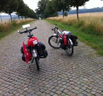
22.August 2015
Maria und Röbi, von der Dänischen bis zur Polnischen Grenze 900 Km. mit dem Rad
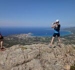
02. Juni 2015
Brigitte, Thomas und Marco erkunden Korsika für eine mögliche Trailrunning-Woche im Frühling 2016.
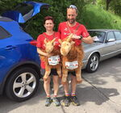
26. April 2015
Genusslauf in Müllheim D. Thea und Bruno mit den Steinböckli dabei und haben es genossen
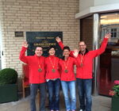
26. April 2015
Hamburg-Marathon, Maria und Röbi Conrad, Bea und Peter Altmann erlebten einen wunderschönen und erlebnisreichen Marathon

20.März 2015
Erster Utra in 2015 am 15.03. Trail du Petit Ballon in den Vogesen von Rouffach zum Petit Ballon - 52 KM 2300 HM - Grüße aus Freiburg Maria und Toni
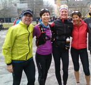
15.März 2015
Trainingslauf, Vorbereitung für den Zürichmarathon, Bea und Peter Altmann, Maria und Röbi Conrad sowie Doris Schwarz
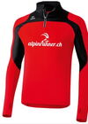
02. März 2015
Das Langarmshirt mit dem neuen Alpinrunner Logo ist nun erhältlich. Bei Marco im Lehrlingshaus anprobieren und mitnehmen oder hier bestellen
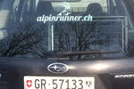
04. Februar 2015
Das neue Alpinrunnerlogo als Autokleber (Heckscheibe, innen)
bei Marco gratis zu beziehen, wir freuen uns wenn du auch unser Logo auf dem Auto präsentierst.
2014
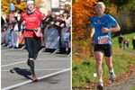
21. November 2014
15. Frauenfelder-Marathon; ein Ausflug im Spätherbst
Brigitte und Heinz waren dabei ein Bericht von Heinz
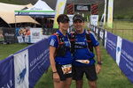
31. Oktober 2014
Grüsse aus Südafrika vom Dryland Traverse
3 Tage 75 km
Bea und Peter Altmann
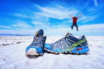
22. Oktober 2014
Davide Fogliada af Weltreise :
Hoi Zäma! grüassa eu alli us der Salzwüesti in Bolivia! :-)
zum Reiseblog von Davide
13. August 2014
Cony und Heinz beim Glacier3000 zum Bericht von Heinz
12. Juli 2014
Salomon4Trails mit
Maria, Röbi und Micheline.
Rangliste
08. Juli 2014
Peter und Bea grüssen vom Zermattmarathon. Ueli Stähli war als alpinrunner dabei >>
18. Mai 2014
Ultratrail auf Menorca, Brigitte und Herbert waren dabei und liefen die Strecke TMCS Trail Menorca Costa Sud (86 km) Brigitte belegte den 7. Schlussrang Overall und Siegte souverän bei den Damen. Herbert belegte den 8. Schlussrang.
Herzliche Gratulation! Zur Rangliste
Deine News für uns
Dieses Formular läuft weiterhin auf der bestehenden Website von alpinrunner.ch.
Zum Formular